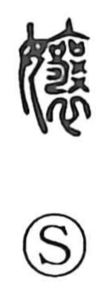

嬢

Kun: | On: jo
young lady ・ miss
Explanation
A phono-semantic character, originally written 孃, formed with the woman radical and 襄 as the phonetic that signals the reading jō. Shirakawa explains 襄 as depicting two covenant vessels (sai) and four ritual “curse” implements arranged at the collar of funerary attire, an image that evokes a chest swelling and rounding. With 女 added, the graph came to denote a woman of full, well-shaped form, and by extension was used for close female relations—mother and daughter. In later usage, the simpler 娘 was also written for these senses.